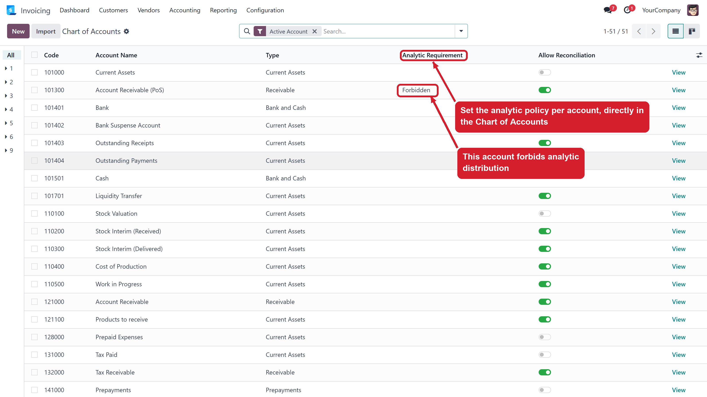
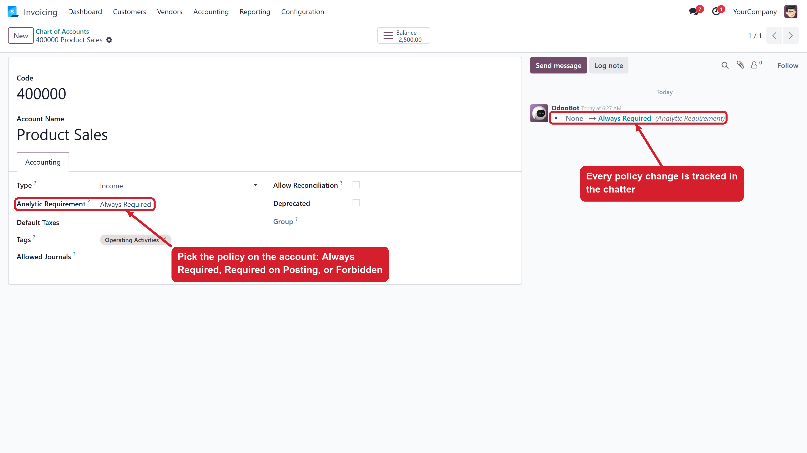
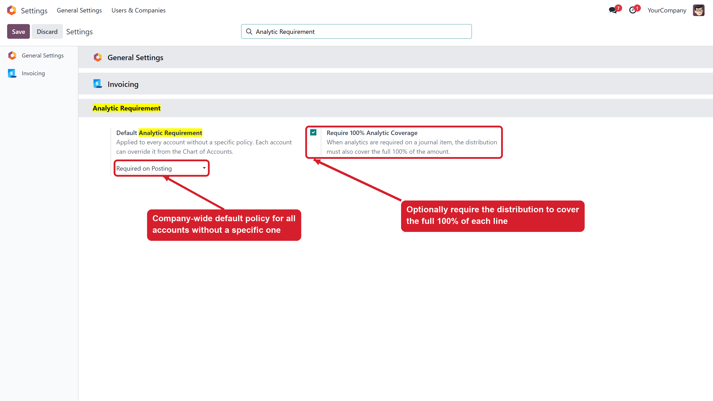
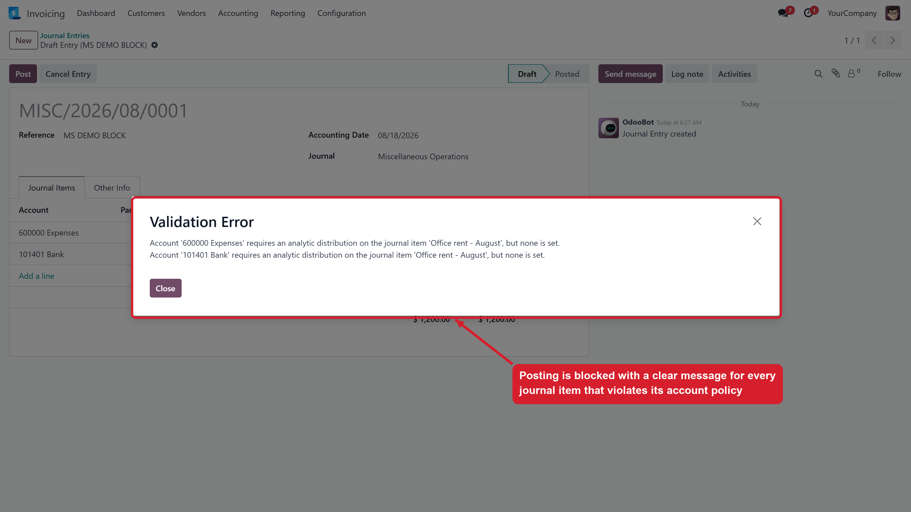

Force or forbid analytic distribution per GL account — Always, on Posting, or Never
Choose Always Required, Required on Posting, or Forbidden on each account, right from the Chart of Accounts.
Set one default policy in Accounting Settings and override it only where an account needs a different rule.
Optionally require the analytic distribution to cover the full 100% of every journal item amount.
One dialog lists every violating journal item with its account and label — fix them all at once.
Analytic reports are only as reliable as the data behind them. One journal item posted without its analytic distribution silently breaks cost-center, project and department reporting. This module makes the analytic dimension mandatory where it matters and forbidden where it doesn't belong (banks, receivables), so your analytic reports always add up to the general ledger.
The Chart of Accounts gets an "Analytic Requirement" column and field.

The policy sits next to the account type, and every change is tracked in the chatter.

Accounting Settings hold the default policy and the optional 100% coverage rule.

Posting stops with one clear message listing every violating journal item.

| Policy | Behaviour |
|---|---|
| Optional | Standard Odoo behaviour — analytics are up to the accountant. |
| Always Required | The journal item cannot even be saved without an analytic distribution. |
| Required on Posting | Drafts stay flexible; the entry is blocked at posting time. |
| Forbidden | The journal item is rejected if it carries any analytic distribution. |
Contact us at MohamedSaiedd53@gmail.com — we usually reply within 24 hours.